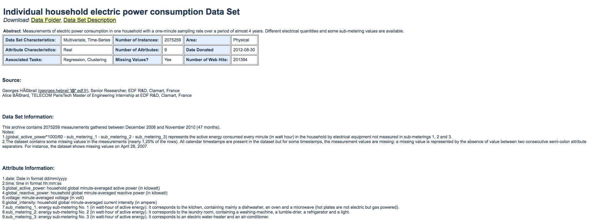
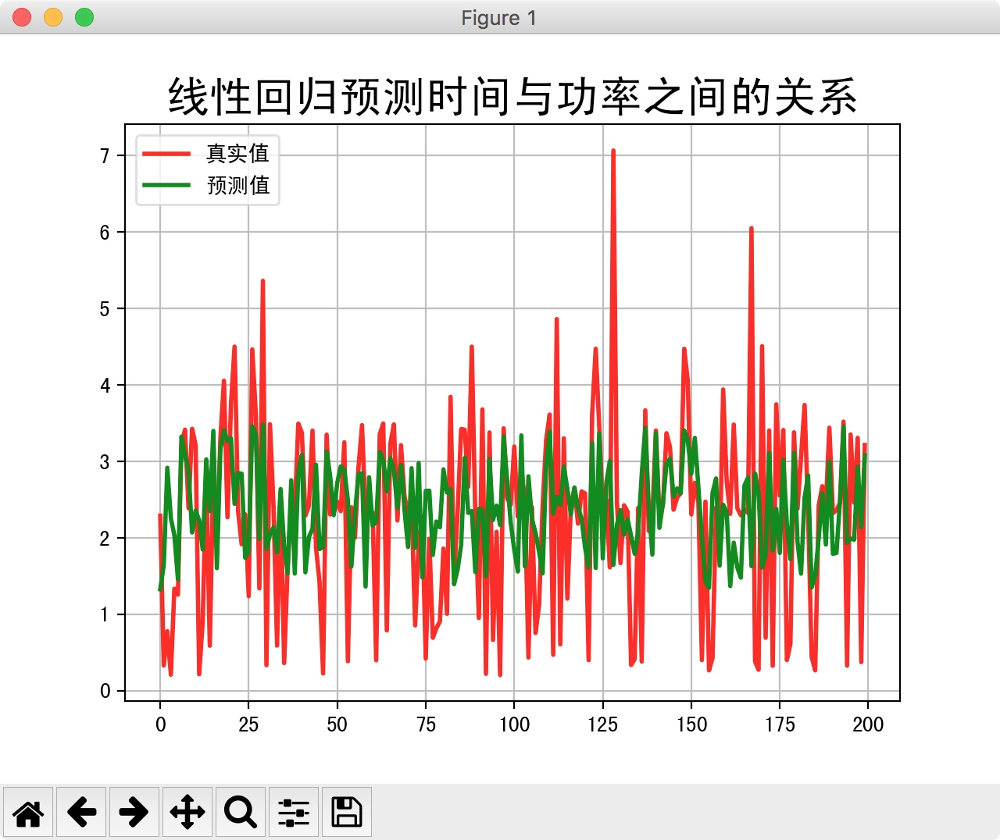
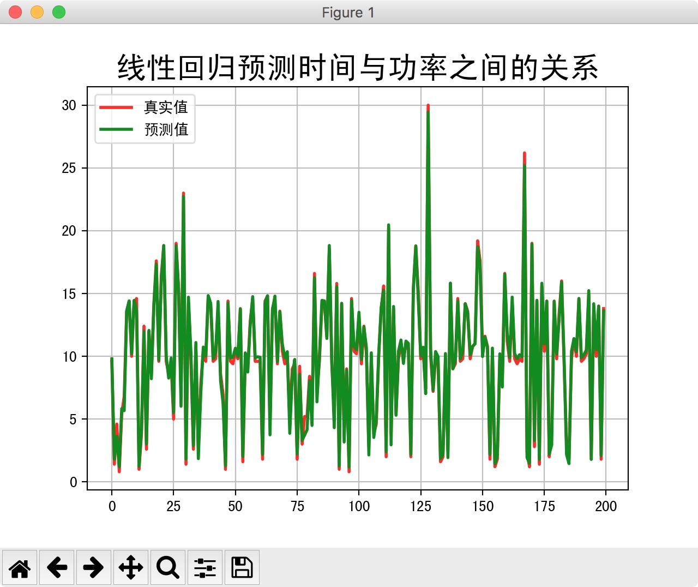
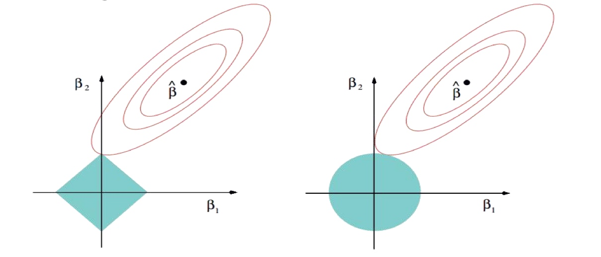

总结一下,这一节主要记录了下面的内容
- 什么是回归算法.
- 线性回归,单变量线性回归,多变量线性回归
- 代价函数
- 过拟合与欠拟合
- 正则项
在这篇文章中,主要介绍了什么是回归算法,以及简单的线性回归.包括单变量线性回归和多变量线性回归.
同时介绍了用最小二乘法求解\(\theta\)值.接下介绍了防止过拟合问题,加入正则项.
最后介绍了如何评价模型的效果.
什么是回归算法
- 回归算法是一种有监督算法;
- 回归算法是一种比较常用的机器学习算法,用于建立解释变量(自变量X)和观测值(因变量Y)之间的关系;
- 从机器学习的角度来讲,用于构建一个算法模型(函数)来做属性(X)与标签(Y)之间的映射关系,在算法的学习过程中,试图寻找一个函数h:使得\(R^d\to R\)使得参数之间的关系拟合性最好;
- 回归算法中,算法(函数)的最终结果是一个连续的数据值,输入值(属性值)是一个d维度的属性/数值向量;
- 因此,回归算法是用于预测连续型数值输出的算法.
常用的回归算法有几种:比如,线性回归,Logistic回归,Softmax回归等等.先说最简单的线性回归算法.
线性回归
一个很常见的例子,根据房屋面积来预测房价(不考虑其他的环境因素).
假如我们有一些关于房屋面积和租赁价格的数据,比如
| 房屋面积(m2) | 租赁价格(1000/元) |
|---|---|
| 10 | 0.8 |
| 15 | 1 |
| 20 | 1.8 |
| 30 | 2 |
| 50 | 3.2 |
| 60 | 3 |
| 60 | 3.1 |
| 70 | 3.5 |
那么一个问题来了,请问,如果现在有一个房屋面积为55平,请问最终的租赁价格是多少比较合适呢?
这个数据里面只有1个条件.很显然,在生活中,房价是和很多因素相关,比如房屋的面积,房间的数量,地理位置等等.
那么第一个例子,其实就是单变量线性回归.第二个当然就是多变量线性回归了.
公式描述如下:
\[
\begin{aligned}
h_{\theta}(x)& =\theta_0+\theta_1x_1+\cdots+\theta_nx_n \\\
& = \theta_01+\theta_1x_1+\cdots+\theta_nx_n \\\
& = \theta_0x_0+\theta_1x_1+\cdots+\theta_nx_n \\\
& = \sum_{i=0}^n\theta_ix_i \\\
& = \theta^Tx
\end{aligned}
\]
所以在线性回归中,最终的要求也就是计算出\(\theta\)值,并选择最优的\(\theta\)值构成算法公式.
这里就涉及到两个问题:
- 计算出\(\theta\)值;
- 选择最优的\(\theta\)值.
对于第一个问题,在机器学习中,一般都是用列向量表示数据,因此公式的最后两行,也就是将第一个列向量转置成为行向量.这样就可以转换成一个行向量与列向量相乘,也就是矩阵相乘了.公式描述就能直观了.
对于第二个问题,就是找代价函数的最小值.后面会说到.
单变量线性回归
因为只含有一个特征/输入变量,因此这样的问题叫做单变量线性回归问题.
公式描述如下:
\[h_{\theta}=\theta_0+ \theta_1x\]
多变量线性回归
公式如下:
\[h_{\theta}(x) =\theta_0+\theta_1x_1+\cdots+\theta_nx_n\]
代价函数(Cost Function)
我们选择的参数\(\theta\)决定了我们得到的直线相对于我们的训练集的准确程度,模型所预测的值与训练集中实际值之间的差距就是建模误差(modeling error).
我们的目标便是选择出可以使得建模误差的平方和能够最小的模型参数.即使得代价函数最小.
\[J(\theta_0,\theta_1)=\dfrac{1}{2m}\sum_{i=1}^m(h_{\theta}(x^{(i)})-y^{(i)})^2\]
\(h_{\theta}(x^{(i)})\)也就是我们的回归函数,即预测值.\(y^{(i)}\)是数据给定的真实值.
接下来说一下公式的推导过程
公式推导
原理说明
很显然,不可能找到一个算法可以百分百的预测正确,而且在实际问题中,总会有一些因素会造成误差.因此我们给线性回归的公式加上一个误差函数\(\epsilon^{(i)}\),这样就更合理了.
\[y^{(i)}=\theta^Tx^{(i)}+\epsilon^{(i)}\]
补充说明:\(\epsilon^{(i)}(1\leq i \leq n)\)是独立同分布的,服从均值为0,方差为某定值\(\sigma^2\)的高斯分布.实际问题中,很多随机现象可以看到看到众多因素的独立影响的综合反应,往往服从正态分布.原理是因为中心极限定理.
因为,误差函数服从高斯分布,因此\(p(\epsilon^{(i)})=\frac{1}{\sqrt{2\pi}\sigma}e^{\left(-\dfrac{(\epsilon^{(i)})^2}{2\sigma^2}\right)}\)
因此,咱们也可以说是在某个因素发生的条件下,y发生的概率.所以可以改写成\(p(y^{(i)}|x^{(i)};\theta)=\frac{1}{\sqrt{2\pi}\sigma}e^{\left(-\dfrac{(y^{(i)}-\theta^Tx^{(i)})^2}{2\sigma^2}\right)}\)
最后,根据极大似然函数方法,咱们来求解这个\(\theta\)值.
\(\theta\)值推导过程以及求解
根据极大似然函数,来求解\(\theta\)值,那么将公式改写成
\[\begin{aligned}
L(\theta)& =\prod_{i=1}^mp(y^{(i)}|x^{(i)};\theta)\\\
& = \prod_{i=1}^m\frac{1}{\sqrt{2\pi}\sigma}e^{\left(-\dfrac{(y^{(i)}-\theta^Tx^{(i)})^2}{2\sigma^2}\right)}
\end{aligned}\]
最大似然,也就是要使这个方程的结果最大.连乘不好求,一般都是对连乘取对数.
现在转成求对数似然
\[
\begin{align}
\ell(\theta)& =\log L(\theta) \\\
& = \log\prod_{i=1}^m\frac{1}{\sqrt{2\pi}\sigma}e^{\Big(-\dfrac{(y^{(i)}-\theta^Tx^{(i)})^2}{2\sigma^2}\Big)} \\\
& = \sum_{i=1}^m\log\frac{1}{\sqrt{2\pi}\sigma}+\sum_{i=1}^m \log e^{\Big(-\dfrac{(y^{(i)}-\theta^Tx^{(i)})^2}{2\sigma^2}\Big)} \\\
& = m\log\frac{1}{\sqrt{2\pi}\sigma}-\frac{1}{\sigma^2}\cdot\frac{1}{2}\sum_{i=1}^m\Big(y^{(i)}-\theta^Tx{(i)}\Big)^2
\end{align}
\]
因为\(m\log\frac{1}{\sqrt{2\pi}\sigma}\)是一个常数,要使\(\ell(\theta)\)最大,那么也就是使这个式子的结果最小.保留\(\dfrac 12\)是因为求导求最小值的时候会约去参数.
这样就得到了我们的损失函数:
\[loss(y_j,\hat{y_j})=J(\theta)=\frac{1}{2}\sum_{i=1}^{m}\left(h_\theta(x^{(i)}-y^{(i)})\right)^2\]
我们的目标是最小化损失函数.
注意:矩阵的平方也等于矩阵的转置乘以矩阵.
\[J(\theta)=\cfrac{1}{2}\sum_{i=1}^{m}(h_{\theta}(x^{(i)})-y^{(i)})^2=\cfrac{1}{2}(X\theta-Y)^T(X\theta-Y) \to \min \limits_{\theta}J(\theta)\]
既然是求最小值,那么肯定是通过求导来计算.对这个损失函数进行求导运算.
\[
\begin{aligned}
\nabla J(\theta)& =\nabla_{\theta}\Big(\cfrac{1}{2}(X\theta-Y)^T(X\theta-Y)\Big) \\\
& = \nabla_{\theta}\Big(\cfrac{1}{2}(\theta^TX^T-Y^T)(X\theta-Y)\Big) \\\
& = \nabla_{\theta}\Big(\cfrac{1}{2}(\theta^TX^TX\theta-\theta^TX^TY-Y^TX\theta+Y^TY)\Big) \\\
& = \cfrac{1}{2}\Big(2X^TX\theta-X^T-(Y^TX)^T\Big) \\\
& = X^TX\theta-X^TY
\end{aligned}
\]
因此求解\(\theta\)的公式就推导出来了(最小二乘法).
\[\theta=(X^TX)^{-1}X^TY\]
公式验证
求解\(\theta\)值的公式已经推导出来了,那让我们来校验一下,是否正确呢?
用python的科学计算包可以很方便的来做科学计算,废话不多说看代码吧.
1.构造测试数据
import numpy as np
import pandas as pd
# 构造测试数据y=3x1+x2
df=pd.DataFrame({
"x1":[1,2,3,4,5,6],
"x2":[1,2,1,2,1,2],
"y":[3,6,7,10,11,14]
})
2.抽取x和y
# 抽取x和y
x=df[['x1','x2']]
# 将y转换成n行1列的列向量
y=df['y'].values.reshape((-1,1))
3.求解\(\theta\) 值
根据公式计算\(\theta\)值,推导过程上面已经详述了.
\[\theta=(X^TX)^{-1}X^TY\]
numpy api说明:
- mat:将ndarray转成matrix
- dot:矩阵乘法
- T:求矩阵的转置
- I:求矩阵的逆
# 将公式转成python代码,计算theta值
np.dot(np.mat(x.T.dot(x)).I,x.T).dot(y)
4.结果输出
matrix([[ 2.],
[ 1.]])
很明显,计算结果正确.两个系数分别是2和1
最小二乘法的参数最优解
求解\(\theta\)的公式为\(\theta=(X^TX)^{-1}X^TY\).但是最小二乘法的使用要求矩阵\(X^TX\)是可逆的.
为了防止不可逆或者过拟合的问题存在,可以增加额外数据影响,导致最终的矩阵是可逆的.
\[\theta=(X^TX+\lambda I)^{-1}X^TY\]
注意:最小二乘法直接求解的难点:矩阵逆的求解是一个难处.
因此,后面会说到另一种求解办法,即,梯度下降法来求解.
线性回归案例
数据来源:https://archive.ics.uci.edu/ml/datasets/individual+household+electric+power+consumption
数据描述:现有一批描述家庭用电情况的数据,对数据进行算法模型预测,并最终得到预测模型(每天各个时间段和功率之间的关系,功率与电流之间的关系等)

我们使用 sklearn 库中的 linear_model 中的 LinerRegression来获取算法,让我们来做一个成功的调包侠,哈哈哈哈.
线性回归预测时间和功率之间的关系
虽然调api不用我们来实现算法的实现了,但是学习的过程还是应该掌握公式的推导比较好.
代码示例如下(机器学习的简单开发流程):
# -*- coding: utf-8 -*-
'''
Created by hushiwei on 2018/4/27.
1:时间与功率之间的关系
'''
import numpy as np
import pandas as pd
import matplotlib as mpl
import matplotlib.pyplot as plt
from sklearn.linear_model import LinearRegression
from sklearn.model_selection import train_test_split
from sklearn.preprocessing import StandardScaler
# 设置字符集,防止中文乱码
mpl.rcParams['font.sans-serif']=[u'simHei']
mpl.rcParams['axes.unicode_minus']=False
# 加载数据
df = pd.read_csv(
"/Users/hushiwei/PycharmProjects/Python-AI/MachineLearning/LinearRegression/datas/household_power_consumption_1000.txt",
sep=";")
print(df.head())
# 异常数据处理
new_df = df.replace('?', np.nan)
datas = new_df.dropna(axis=0, how='any')
# 观察数据
print(datas.describe())
# 处理时间
def date_format(dt):
import time
t = time.strptime(' '.join(dt), '%d/%m/%Y %H:%M:%S')
return (t.tm_year, t.tm_mon, t.tm_mday, t.tm_hour, t.tm_min, t.tm_sec)
# 获取X和Y,并将时间转换为数值型变量
# X:时间
# Y:用电量
X=datas.iloc[:,0:2]
X=X.apply(lambda x:pd.Series(date_format(x)),axis=1)
Y=datas['Global_active_power']
print(X.head())
print(Y.head())
# 划分数据集
X_train,X_test,Y_train,Y_test=train_test_split(X,Y,test_size=0.2,random_state=0)
# 对数据进行标准化
ss=StandardScaler()
# 训练并转换
X_train=ss.fit_transform(X_train)
# 直接使用在模型构建数据上进行一个数据标准化操作
X_test=ss.transform(X_test)
# 这里,fit_transform和transform的区别?
# fit_tranform是计算并转换,在这个过程中会计算出均值和方差,然后将变量进行标准化去量纲
# transform是转换,它将用上面计算出的均值和方差来进行标准化去量纲.
# 因为训练集的数据相较于测试集更多 ,所以测试集也延用训练集算出来的均值和方差
# 因此fit_transform在transform上面调用
# 模型训练
liner=LinearRegression()
liner.fit(X_train,Y_train)
# 模型校验
y_predict=liner.predict(X_test)
time_name=['年','月','日','时','分','秒']
print("准确率:",liner.score(X_train,Y_train))
mse=np.average((y_predict-Y_test)**2)
rmse=np.sqrt(mse)
print('rmse:',rmse)
print("特征的系数为:",list(zip(time_name,liner.coef_)))
# 模型保存
# from sklearn.externals import joblib
#
# joblib.dump(ss,"data_ss.model") ## 将标准化模型保存
# joblib.dump(liner,"data_lr.model") ## 将模型保存
#
# joblib.load("data_ss.model") ## 加载模型
# joblib.load("data_lr.model") ## 加载模型
# 预测值和实际值可视化画图比较
t=np.arange(len(X_test))
plt.figure(facecolor='w')
plt.plot(t,Y_test,'r-',linewidth=2,label='真实值')
plt.plot(t,y_predict,'g-',linewidth=2,label='预测值')
plt.legend(loc='upper left')
plt.title("线性回归预测时间与功率之间的关系",fontsize=20)
plt.grid(b=True)
plt.show()
结果输出:
准确率: 0.24409311805909026
rmse: 1.164092345973625
特征的系数为: [('年', 0.0), ('月', 1.1102230246251565e-16), ('日', -1.415881661733238), ('时', -0.9349532432495644), ('分', -0.10214075598497), ('秒', 0.0)]
可视化显示:

从这个结果可以看出,预测效果不太好,可能是时间与功率没啥关系,我们现在换一下因变量与自变量
线性回归预测功率与电流之间的关系
代码示例:
# -*- coding: utf-8 -*-
'''
Created by hushiwei on 2018/4/27.
desc: 功率与电流之间的关系
'''
import numpy as np
import pandas as pd
import matplotlib as mpl
import matplotlib.pyplot as plt
from sklearn.linear_model import LinearRegression
from sklearn.model_selection import train_test_split
from sklearn.preprocessing import StandardScaler
# 设置字符集,防止中文乱码
mpl.rcParams['font.sans-serif']=[u'simHei']
mpl.rcParams['axes.unicode_minus']=False
# 加载数据
df = pd.read_csv(
"/Users/hushiwei/PycharmProjects/Python-AI/MachineLearning/LinearRegression/datas/household_power_consumption_1000.txt",
sep=";")
print(df.head())
# 异常数据处理
new_df = df.replace('?', np.nan)
datas = new_df.dropna(axis=0, how='any')
# 观察数据
print(datas.describe())
X=datas.iloc[:,2:4]
Y=datas.iloc[:,5]
print(X.head())
print(Y.head())
# 划分数据集
X_train,X_test,Y_train,Y_test=train_test_split(X,Y,test_size=0.2,random_state=0)
# 对数据进行标准化
ss=StandardScaler()
# 训练并转换
X_train=ss.fit_transform(X_train)
# 直接使用在模型构建数据上进行一个数据标准化操作
X_test=ss.transform(X_test)
# 这里,fit_transform和transform的区别?
# fit_tranform是计算并转换,在这个过程中会计算出均值和方差,然后将变量进行标准化去量纲
# transform是转换,它将用上面计算出的均值和方差来进行标准化去量纲.
# 因为训练集的数据相较于测试集更多 ,所以测试集也延用训练集算出来的均值和方差
# 因此fit_transform在transform上面调用
# 模型训练
liner=LinearRegression()
liner.fit(X_train,Y_train)
# 模型校验
y_predict=liner.predict(X_test)
print("电流训练准确率: ",liner.score(X_train,Y_train))
print("电流预测准确率: ",liner.score(X_test,Y_test))
print("电流参数: ",liner.coef_)
# 预测值和实际值可视化画图比较
t=np.arange(len(X_test))
plt.figure(facecolor='w')
plt.plot(t,Y_test,'r-',linewidth=2,label='真实值')
plt.plot(t,y_predict,'g-',linewidth=2,label='预测值')
plt.legend(loc='upper left')
plt.title("线性回归预测时间与功率之间的关系",fontsize=20)
plt.grid(b=True)
plt.show()
模型预测结果
电流训练准确率: 0.9909657573073489
电流预测准确率: 0.9920420609708968
电流参数: [5.07744316 0.07191391]

从图中也可以看出,效果很明显,预测得非常好.
线性回归的过拟合和正则项
我们用线性回归的时候,可能拟合的不是那么好,那么可以加大阶数,去拟合.
但是也不是阶数越高效果越好.为什么这么说呢?看例子分析.
我们的目标函数是(之前已经写过推导过程):
\[J(\theta)=\dfrac{1}{2}\sum_{i=1}^m(h_{\theta}(x^{(i)})-y^{(i)})^2\]
为了防止数据过拟合,也就是\(\theta\)值在样本空间中不能过大/过小,可以在目标函数之上增加一个平方和损失:
\[J(\theta)=\dfrac{1}{2}\sum_{i=1}^m(h_{\theta}(x^{(i)})-y^{(i)})^2+\lambda\sum_{i=1}^n\theta_j^2\]
我们如果对这个函数进行求导计算会得出之前写的一个函数,即
\[\theta=(X^TX+\lambda I)^{-1}X^TY\]
注意:这里新加的\(\lambda\sum_{i=1}^n\theta_j^2\),也叫正则项(norm).这里的这个正则项叫做L2-norm.所以还有其他的正则项,且看后续说明.
正则项
L2正则(L2-norm):\(\lambda\sum_{i=1}^n\theta_j^2 \quad \lambda > 0\)
L1正则(L1-norm):\(\lambda\sum_{i=1}^n|\theta_j| \quad \lambda > 0\)
Ridge回归
使用L2正则的线性回归模型就称为Ridge回归(也叫岭回归)
\[J(\theta)=\dfrac{1}{2}\sum_{i=1}^m(h_{\theta}(x^{(i)})-y^{(i)})^2+\lambda\sum_{i=1}^n\theta_j^2 \qquad \lambda > 0\]
Lasso回归
使用L1正则的线性回归模型就称为LASSO回归(Least Absolute Shrinkage and Selection Operator)
\[J(\theta)=\dfrac{1}{2}\sum_{i=1}^m(h_{\theta}(x^{(i)})-y^{(i)})^2+\lambda\sum_{i=1}^n|\theta_j| \qquad \lambda > 0\]
Ridge(L2-norm)和LASSO(L1-norm)比较
L2-norm中,由于对于各个维度的参数缩放是在一个圆内缩放的,不可能导致有维度参数变为0的情况,那么也就不会产生稀疏解;实际应用中,数据的维度中是存在噪音和冗余的,稀疏的解可以找到有用的维度并且减少冗余,提高回归预测的准确性和鲁棒性(减少了overfitting)(L1-norm可以达到最终解的稀疏性的要求)
Ridge模型具有较高的准确性,鲁棒性以及稳定性;LASSO模型具有较高的求解速度.
如果既要考虑稳定性也考虑求解的速度,就使用Elastic Net

Elastic Net
同时使用L1正则和L2正则的线性回归模型就称为Elastic Net算法(弹性网络算法)
\[J(\theta)=\dfrac{1}{2}\sum_{i=1}^m(h_{\theta}(x^{(i)})-y^{(i)})^2+\lambda \left(p\sum_{j=1}^n|\theta_j| +(1-p)\sum_{j=1}^n\theta_j^2 \right) \qquad \lambda > 0 , p \in [0,1]\]
模型效果判断
MSE:误差平方和,越趋近于0表示模型越拟合训练数据
\[MSE=\dfrac{1}{m}\sum_{i=1}^m(y_i-\hat y_i)^2\]
RMSE:MSE的平方根,作用同MSE
\[RMSE=\sqrt{MSE}=\sqrt{\dfrac{1}{m}\sum_{i=1}^m(y_i-\hat y_i)^2}\]
\(R^2\):取值范围(负无穷,1],值越大表示模型越拟合训练数据;最优解是1;当模型预测为随机值的时候,有可能为负;若预测值恒为样本期望,\(R^2\)为0
TSS:总平方和TSS(Total Sum Of Squares),表示样本之间的差异情况,是伪方差的m倍.
RSS:残差平方和RSS(Residual Sum Of Squares),表示预测值和样本值之间的差异情况,是MSE的m倍
\[R^2=1-\dfrac{RSS}{TSS}=1-\dfrac{\sum_{i=1}^m(y_i-\hat y_i)^2}{\sum_{i=1}^m(y_i-\overline y)^2} \qquad \overline y=\dfrac{1}{m}\sum_{i=1}^my_i\]
机器学习调参
调参
在实际工作中,对于各种算法模型(线性回归)来讲,我们需要获取\(\theta,\lambda,p\)的值;\(\theta\)的求解其实就是算法模型的求解,一般不需要开发人员参与(算法已经实现),主要需要求解的是\(\lambda\)和p的值,这个过程就叫做调参(超参)
交叉验证
将训练数据分为多份,其中一份进行数据验证并获取最优的超参:\(\lambda\)和p;比如:十折交叉验证,五折交叉验证(scikit-learn中默认)等